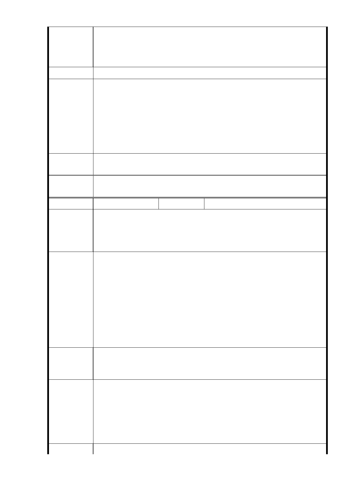

4. 廣慈院區深地層不穩，減少開發就增安全，危險地區建
商業大樓會引起震波，震動附近住家安全，如〝如傾斜
龜裂〞
我們要安全，我們要保護家園，懇請有關人員重視，謝謝！
建 議 辦 法 請重新規劃。
1 .有關斷層、日照權疑義部分，同編號2回復內容。
2.有關增設停車位部分，社會福利設施用地開發後，預計可釋出
市府回應
意見
汽車停車位264位、機車停車位465位，供地區居民停車使用。
3.本計畫區南臨寬度25公尺之福德街，大道路及福德街84巷寬度
亦達15公尺，北側林口街80巷寬度雖為8公尺，惟本案業規劃
於社會福利設施退縮22公尺寬之帶狀式開放空間，以利周邊地
區民眾使用。
專案小組
審查結論
同編號 1。
委
決
員
會
議
同編號 1。
編號
8
陳情人 陳○賓、江○萍
1. 根據 參、基地發展現況二、土地權屬：本案社會福利設施用
陳情理由
地、商業區、公園用地及道路用地均為市有土地，分屬本府
社會局、財政局、公園處及新建工程處管有（示意圖詳圖 2）
。
1 .請問土地所有權分成四個單位管有，
（a）為何沒有捷運局的土地權屬規劃，捷運局卻可以染指此塊
土地？
（b）是如何形成這樣的規劃？能否利用當地既成綠帶規劃成公
建議辦法
園適應地球暖化氣候變遷與當地沒有足夠公園綠地的企望
？
（c）請問福德派出所員計畫在商業區內，此修正計畫沒提及，
請遷走在商業區，以免有暗渡陳倉之嫌！
（都市計畫草率，沒講清楚如何形成這樣的規劃？）
2. 壹、計畫緣起本府於 95 年間辦理都市計畫變更，藉由社會福
陳 情 理 由 利設施之更新與轉型，及公共建設之投入，帶動周邊地區發
展與環境改善。
2.此用地原為社福用地，計畫變更理由是更新與轉型，基本上還
建議辦法
是以社福為主體，但是
肆、修訂主要計畫內容 表格內 說明 3：〔因商業區、社會福
利設施用地係修正採分別開發。。。，是否有變相利用〔社福
資源〕而有與社福資源地目脫鉤慷〔社福〕之慨之嫌？（社福
資源濫用）
陳 情 理 由 3. 肆、計畫目標與規劃構想一計晝目標（一）社會福利設施更
- 36 -